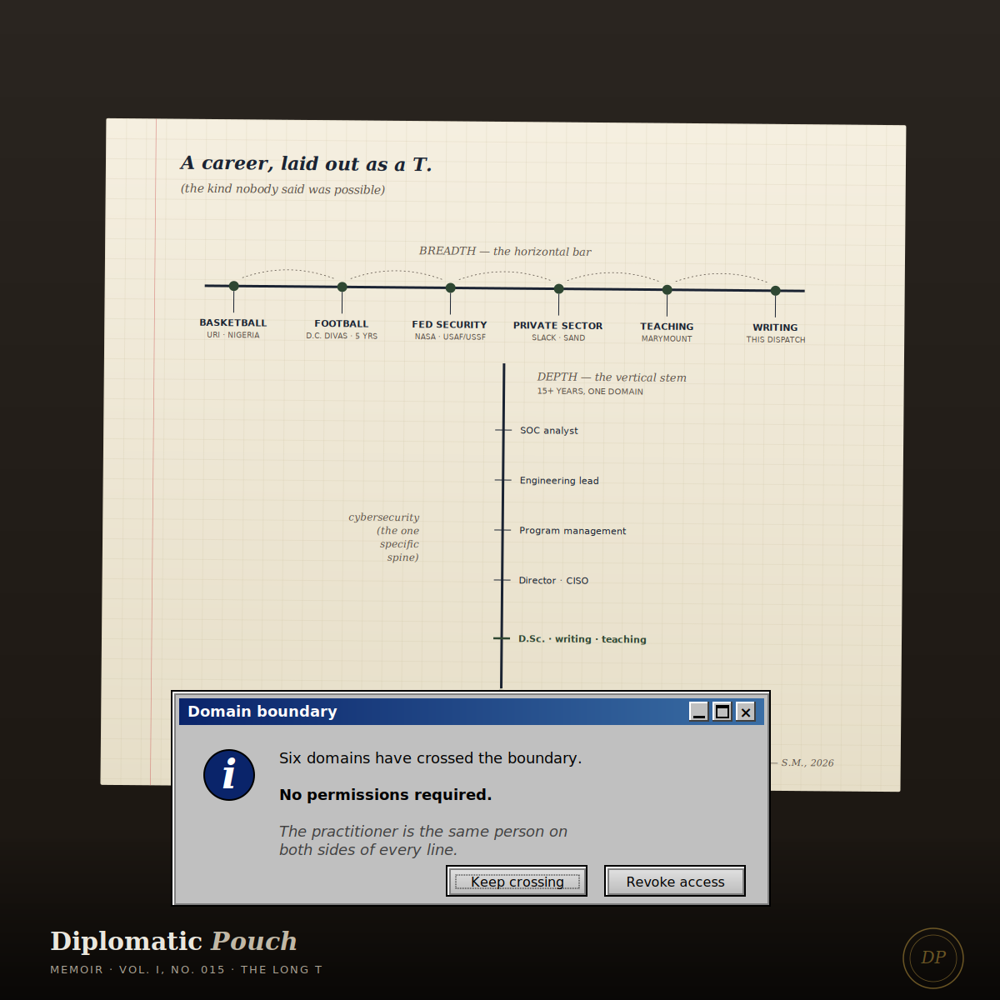

The Long T
A memoir of a career built across domains that were not supposed to touch — and the quiet argument that the next generation of security leaders will be the ones whose depth was earned in more than one place.

I want to tell you about a conversation I had with a career counselor in my sophomore year at the University of Rhode Island. I was a computer science major on a Division I basketball scholarship. The counselor was concerned. The concern was that I was 'splitting my attention.' The specific language she used, which I remember verbatim twenty-one years later, was that she was worried I was going to end up 'a decent engineer and a decent athlete rather than an excellent one of either.' She meant it kindly. She was giving me advice she had given, I think, to many students before me. The advice was to pick. Specialize. Protect the depth of one thing by letting go of the other. Otherwise, she said, I would be surpassed in both lanes by people who had only ever been in one lane.
She was wrong, but she was wrong in a particular way, and the particular way she was wrong is the subject of this dispatch. She was wrong because she was giving twentieth-century career advice to a career that was going to be built in the twenty-first century. The shape of the career she was imagining — deep expertise in a single domain, protected across decades, rewarded by promotions within a single ladder — was already being replaced by a different shape, and the replacement was happening fastest in the fields I was going to end up working in. She could not have known this. I did not know it either. Nobody in that career services office in the fall of 2005 was telling anybody that the security field they were about to enter would, within fifteen years, require fluency across technical implementation, business communication, policy design, doctoral-level research, workforce development, and ethical review of autonomous systems that did not yet exist.
The counselor's advice was the right advice for a career that was already ending. The wrong advice for the one that was beginning. I had the good fortune of being too stubborn to take it.
The depth, which was real
I want to be honest about what the depth looked like. I did not come to the breadth by being a dilettante. Each domain I worked in, I worked in deeply enough to be considered a serious contributor by the people who had spent their entire careers there.
In basketball, the depth was the three-point record at URI that is still standing twenty years later, and the Nigerian national team roster at the 2007 FIBA Africa Championship, which was the qualifying tournament for the 2008 Beijing Olympics. The depth was earned the way basketball depth is always earned, in gyms before and after class, in shooting routines run in silence, in the specific repetitive labor that produces a shot a defender cannot interrupt.
In federal cybersecurity, the depth was twelve years. Eight at NASA, four at DOJ. Direction of a twenty-four-million-dollar security program at NASA. Protection of more than two hundred and fifty critical space systems as a Base Information Security Manager in the earlier Air Force and Space Force work. The incident response work, the ransomware recovery work, the compliance frameworks built from scratch for agencies that had never had them. The honors and the citations are matters of record. The depth was real.
In doctoral research, the depth was the dissertation I defended at Marymount in 2023, which argued — in the register and at the length the academy requires — that the foundational cybersecurity triad we had inherited from the 1970s was architecturally insufficient for the systems we were now being asked to protect. Three years of research. A committee. The specific labor of making an argument that could withstand scrutiny from people whose job was to find the gaps.
In teaching, the depth was years as adjunct faculty at Marymount, teaching corporate security, network security, cloud security to practitioners who would go on to do the work in organizations I would never see. The depth of pedagogy is not the depth of practice. It is a separate depth. It is harder to earn than I expected.
In nonprofit work, the depth has been the construction of Hacking the Workforce — the 501(c)(3) I founded to build a holistic cybersecurity talent pipeline through registered apprenticeship, with my mother as senior strategic advisor. The depth there is in the specific labor of apprenticeship design, Department of Labor compliance, funding architecture, and the quiet work of placing the first cohort of apprentices into roles they were told they could not reach. The depth is counted in careers, not in papers.
In enterprise security leadership, the depth is where I am now. First security hire at Sand Technologies, a global data and AI company serving emerging markets. Director of Cybersecurity. The AI governance program that is my current responsibility, in a moment when the industry is deciding what AI governance even is. The depth there is still being earned. I will know how deep it was when I look back.
The horizon, which turned out to be the career
What I did not realize for a long time was that the depth in each domain was not the point. The point was that the depths connected.
The basketball work taught me pattern recognition under pressure in a way no classroom could have taught me. You read a defense in under a second and you execute. You read a defense wrong and the ball turns over. The feedback is instant and public. That is a skill. It did not stay in the gym. It is the same skill I use when I read an incident in progress and decide, in the first two minutes, which of five possible response paths we are going to commit to. The gym rehearsed the skill. The SOC uses it. The skill is the asset. The venue is incidental.
The federal work taught me how trust is structured at the scale of institutions. What it means to protect a system that belongs to a public that cannot inspect it. What it means to accept a clearance and the obligations that come with it. What it means to work inside an organization whose purpose is older than you and will outlast you. That knowledge did not stay at the agencies. It is the same knowledge I use now when I design AI governance programs for a private company, because the question of institutional trust turns out to be the same question whether the institution is a federal agency or an enterprise or a nonprofit or a classroom. Different venues. Same question.
The doctoral work taught me how to make an argument that holds against a committee. How to notice the gap in my own reasoning before someone else notices it for me. How to write for an audience that is not predisposed to agree. That is a skill. It did not stay in the thesis. It is the skill I use when I write this publication, when I present a security proposal to a leadership team, when I draft a policy that will be critiqued by compliance officers whose incentives are structured against me.
The teaching taught me how to explain. The nonprofit work taught me how to build the scaffolding that lets people reach a career they did not grow up believing was available. The enterprise work is teaching me what the AI transition is going to require of security leaders in the decade ahead.
Each domain gave me a tool. The career has been in how the tools work together.
Each domain gave me a tool. The career has been in how the tools work together.
What the T-shape actually is
The industry language for what I am describing is the T-shaped professional. Deep expertise in one area, represented by the vertical bar of the T. Broad competence across adjacent domains, represented by the horizontal bar across the top. The metaphor is useful, up to a point. Where it fails is in suggesting that the vertical is the real asset and the horizontal is a nice-to-have decoration. In my experience, the opposite is true. The horizontal is where the career lives. The vertical is the entry fee.
The practitioners I know whose careers have gone the furthest in security leadership are not the ones with the deepest single-domain expertise. They are the ones whose horizontal is widest. They can translate across engineering, business, policy, legal, ethics, communication, and organizational design, because they have worked in enough of those domains to speak each one's language with some fluency. The vertical gave them credibility. The horizontal gave them influence. The influence is where the actual leverage lives.
I want to say the harder version of this, which is that the industry structure actively punishes the construction of the horizontal in the early career years. The incentive at the junior level is to specialize fast, deepen fast, become indispensable in a narrow domain fast, and ride the specialization into senior individual contributor roles. The practitioners who do this well end up at the ceiling the counselor warned me about — a decent engineer, excellent at one thing, unable to speak to the business, security, or design implications of the thing they are excellent at, and therefore capped at a specific altitude in the organization they will not get above. The ceiling the counselor was describing exists. It is just that specialization causes it, not the other way around.
What this means for the apprentices
The apprentices I work with at Hacking the Workforce get a version of the counselor's advice almost every week, from well-meaning people in their lives. Pick a specialty. Get the certification. Narrow down. Build the depth. These are all reasonable things to do and I do not tell them to ignore the advice. I tell them to add something to it.
The thing I tell them to add is this. Pick a specialty, yes. Get deep enough in it to be credible, yes. And then, deliberately, inhabit at least two more domains that are adjacent to your specialty but not inside it. If your specialty is detection engineering, work alongside the policy team for a quarter. If your specialty is application security, spend time with the finance team learning how security spending actually gets authorized. If your specialty is governance, embed with an engineering team and ship something that is subject to the controls you write.
The adjacency is where the horizontal gets built. The horizontal is where the career lives. The specialty was always the entry fee. The thing that distinguishes a senior individual contributor who stays at that level forever from a senior individual contributor who becomes a director and then a vice president and then a CISO is almost always the width of the horizontal, which was earned in the years that the specialists spent going deeper into the vertical.
The counselor, revisited
I thought, for a long time, that the counselor had just been wrong about me. The counselor had bet that splitting attention would produce a decent-of-both. The counselor had, in my case, bet wrong. I built two depths and then four more and the depths connected and the career was the connection.
What I now believe, twenty-one years later, is that the counselor was not wrong about me specifically. The counselor was wrong about what the career was going to require. In the fall of 2005, the career services office at URI was advising students to prepare for the economy of 1983, because that was the economy the counselors themselves had entered and the economy whose shape they still carried in their models. The economy of 2026 is a different animal. The counselors who came up in it will advise differently.
The apprentices entering the field now are going to spend the next forty years building careers inside an economy whose shape nobody in a 2026 career services office fully understands yet. The one thing I am confident about is that the career will not be built by the practitioners who were best at a single thing. It will be built by the practitioners who were able to assemble, over decades, a working knowledge of enough adjacent domains that they could lead across them when the moment required leadership across them.
The counselor told me I was going to end up decent at two things rather than excellent at one. I ended up, instead, excellent at the specific thing almost nobody is taught to be excellent at, which is the connection between domains. The connection is itself a discipline. It can be practiced. It can be deepened. It compounds across a career in a way the specialty does not. I did not know that in 2005. I know it now. I write this publication partly to make sure the apprentices do not have to spend twenty years figuring it out the hard way, as I did. The depth is the entry fee. The horizon is the career. Build both. Build them from the first year. The counselor who warned you off the second one was giving you the right advice for the wrong century.
Next dispatch ── To be sealed in January.
— Dr. Safi Mojidi